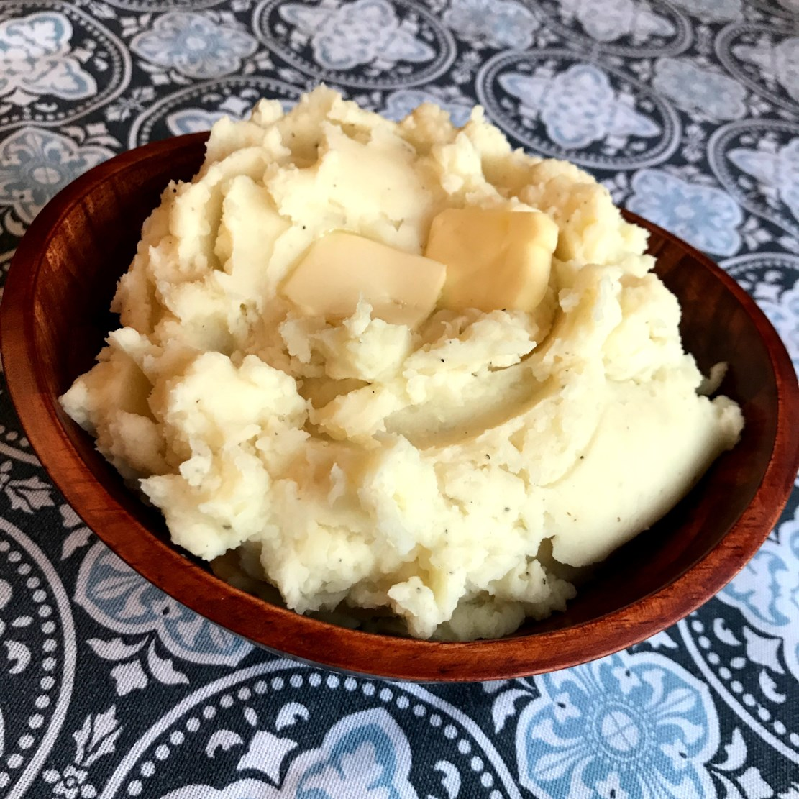

Mashed Potatoes Recipe

Here are some yummy potatoes!
These delicious mashed potatoes will have all your guests coming back for senonds...in seconds!
Ingredients
- 3 large russet potatoes, peeled and cut in half lengthwise
- ¼ cup butter
- ½ cup whole milk
- salt and ground black pepper to taste
Steps
- Place the potatoes into a large pot, and cover with salted water. Bring to a boil, reduce heat to medium-low, cover, and simmer until tender, 20 to 25 minutes. Drain, and return the potatoes to the pot. Turn heat to high, and allow the potatoes to dry for about 30 seconds. Turn off the heat.
- Mash the potatoes with a potato masher twice around the pot, then add the butter and milk. Continue to mash until smooth and fluffy. Whisk in the salt and black pepper until evenly distributed, about 15 seconds.
.